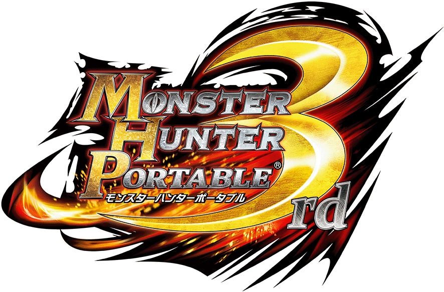

Monster Hunter
Portable 3rd
Released: December 1, 2010
Platform: PlayStation Portable(PSP)
Exerience and Explore in the Yukumo Village.Master the hunt

Released: December 1, 2010
Platform: PlayStation Portable(PSP)
Exerience and Explore in the Yukumo Village.Master the hunt
Fanged Wyvern
Zinogre is a quadrupedal monster with superficially lupine features. It has highly developed limbs, sharp fangs and claws. Its body is covered in turquoise scales, whitish fur, and tan bony spikes, and it has two prominent horns. Closer observation of its horns and the spikes on its back reveal that they are porous, presumably for hosting Thunderbugs when the monster charges itself.
When charged with electricity, the spikes on its back and its fur will stick up, and many of the bony and furred parts of its body will start to glow bright blue.
Zinogre is a very agile monster, able to perform many impressive grounded and aerial maneuvers despite its hulking size. It primarily attempts to outmaneuver its prey before attacking with swipes from its well-developed forelimbs and tail, the former of which are often strong enough to kill prey in a single blow.
Uniquely, Zinogre has a symbiotic relationship with Thunderbugs and is able to summon them from the vicinity, utilizing their natural electrical abilities for its own purposes. Zinogre houses them within its horns and spikes and uses them to rapidly build up an electric charge throughout its body, although it must stop acting and leave itself open in order to do so. Once enough charge is accumulated, Zinogre's aggressiveness and strength will increase dramatically, and it becomes able to augment its physical blows with explosives bursts of sparks and lightning. It also gains the ability to summon bolts of lightning from range, or send forth clusters of electrified Thunderbugs to shock foes. However, this charge can be dispelled if Zinogre receives enough damage, upon which it will have to spend some time acting more passively while it recharges itself.
Zinogre are solitary hunters, though they live in groups, typically the male Zinogre will go alone when hunting, roaming their territory for prey. They are highly aggressive and will attack intruders on sight.
Zinogre inhabits mostly temperate mountainous areas such as the Misty Peaks and Heaven's Mount.
Want to learn more about this monster?
Monster Hunter Zinogre Wiki FandomFlying Wyvern
Rathalos are large, bipedal wyverns with a spiny, armored hide covering their body. Their outer shell features much brighter and more vibrant colors than that of their female counterpart, the Rathian. It is primarily bright red, with black markings throughout. Like the Rathian, Rathalos possess a flame sac which is used to produce deadly flaming projectiles from the mouth. The talons upon their feet are highly poisonous and are known to inflict toxic mortal wounds on larger prey. In addition, their long, thick tail features a heavy spiked club at the end. Rathalos' wing membranes feature ornate patterns which are likely used to attract potential mates.
Rathalos are expert flyers, and as such are prone to hunting from the skies. By launching a surprise aerial attack, they can inflict poisonous wounds with their talons or burn prey with flaming projectiles. On the ground, Rathalos remain formidable opponents. Using their powerful legs, they can chase down prey from a distance or inflict blunt-force damage with their clubbed tail. At a close enough range, they are known to use their sharp teeth to bite at foes as well. Some Rathalos are capable of staying in the air and launching a "few" fireballs before landing back to the ground.
Rathalos are highly territorial monsters, and as such, are aggressive towards intruders. They will chase away or attempt to kill any monster which may pose a threat to their land. While hunting, Rathalos will stalk prey from the air before swooping in for the kill. Once they have successfully brought down their prey, they will carry it away to eat in private, safe from scavengers or other large monsters which might attempt to steal the kill.
Rathalos have been spotted in many kinds of environments, from the temperate Forest and Hills to the extreme heat of the Volcano. As a master of flight, they will travel far and wide, searching for prey from the skies. Rathalos is also the apex predator of the Ancient Forest alongside Nargacuga.
 FireFireblight
FireFireblight Poison
Poison Stun
Stun Water
WaterWant to Learn More About This Monster?
Monster Hunter Rathalos Wiki FandomFlying Wyvern
As a Rathalos rare species, he retains the standard characteristics of the species, although he has some differences. This Rare Species features a shining silver carapace from head to tail with black markings along the spine. He is notably slightly larger than the average Rathalos. After activating its “Incandescent” state, his head, chest, and the area between the neck and wings are lit with blue flames.
He frequently barrages hunters with his triple fireball and aerial claw attacks. When on ground, he tends to use far more tail whips than bites and will charge hunters less frequently. Silver Rathalos also appears to go into a state of rage more often than his red or blue counterparts. He can enter the Incandescent state where his attacks becomes even more aggressive.
Silver Rathalos is much more dangerous than the common species. He prefers aerial attacks to ground-based ones.
He is rarely found in the Swamp, Old Swamp, or Forest and Hills, but can most often be seen at the top of ancient Towers. The Hunters Guild goes out searching for Silver Rathalos in other lands so they can be hunted in special events, where they're placed in Arena and pitted against Hunters.
FireFireblightPoisonStunWaterWant to Learn More About This Monster?
Monster Hunter Silver Rathalos Wiki FandomFlying Wyvern
Tigrex is a large, quadrupedal wyvern characterized by its massive T-rex head and jaws, powerful limbs with large wings, and striking yellow/blue striped coloration. The top of its head is tipped with a pair of horn-like ears, and its segmented tail ends with a spiny protrusion.
As a quadrupedal wyvern, its wings have evolved into forelegs, which allows it to run at very fast speeds. Though it possesses a pair of adequately-developed wings, it is rarely seen flying in a traditional sense. It is in fact more prone to gliding from location to location. It has a powerful set of lungs which gives it the ability to produce extremely loud, concussive roars which can physically damage nearby objects. Unlike many other monsters, Tigrex does not attack with any elements, a trait it shares with the Monoblos and its cousins. Rather, it relies on its sheer brute strength and an ear-splitting roar to bring down opponents.
Tigrex will usually attempt to intimidate would-be attackers with an ear-splitting roar. If combat becomes intense enough, it will flush blood to its forelimbs, face, and eyes, in order to give its skin a bright-red glow as an effort to further intimidate attackers.
The Tigrex can be found in many different environments. Like many wyverns, it will travel far and wide in search of prey.
Fire (on fiery terrains)Water (on watery terrains) Snowman (on snowy terrain)FireblightWaterblight
Snowman (on snowy terrain)FireblightWaterblight (on effluvium gas terrain)
(on effluvium gas terrain)Want to Learn More About This Monster?
Monster Hunter Tigrex Wiki FandomFlying Wyvern
Brute Tigrex features a darker, more muted color palette of various shades of grey, brown, and beige. It apparently possesses a more robust set of lungs than the common species, as evidenced by its increased roaring capacity. It has a more powerful set of forelimbs, and has adapted to live in harsher environments than any other variety of Tigrex.
Brute Tigrex is capable of using its powerful forelimbs to trample opponents, and can produce incredibly concussive roars which can send nearby objects flying.
This subspecies will exhibit similar behavior to its common counterpart, but it is more brutal and aggressive when approaching and engaging prey and attackers alike.
Brute Tigrex is known to inhabit harsh environments such as Volcanoes and Deserts.
Fireblight (on fiery terrain)Waterblight (on watery terrain)Effluvium (on effluvium gas terrain)WaterWant to Learn More About This Monster?
Monster Hunter Brute Tigrex Wiki FandomBrute Wyvern
Deviljho is a very large, bipedal Brute Wyvern characterized by its uniform forest green coloration and muscular upper body. Its thick hide is littered with short, jagged spines that reach a maximum height along the back and tail. Deviljho has a narrow snout with a large lower jaw, covered in multiple rows of teeth spreading outwards from the mouth. It has massive, powerful hind legs, but tiny, poorly developed forelegs that it rarely utilizes. When enraged, Deviljho's back and shoulder muscles swell considerably revealing scars. During this period, areas of its skin will take on a bright red coloration.
Deviljho is endowed with extremely developed musculature that grants it unparalleled physical strength and stamina. Of note are its powerful jaws, assisted by sheer muscular strength, which can deliver bone-crunching bites to potential targets, and can also pick up and throw large objects or even prey. In addition, its powerful hind legs allow it to run at relatively high speed and leap considerable distances towards prey, and a combination of both powerful neck muscles and a durable skull allow it to use its head as a mace/a battering weapon against its enemies. When enraged, Deviljho is capable of producing a mysterious clouded emission that can be shot out of the mouth in a stream at prey. This substance contains the Dragon Element and can be very deadly to hunters as well as other monsters.
Deviljho is a nomadic monster, prone to wandering vast distances in search of prey. Its status as a super-predator allows it to overtake the territory of any monster that stands in its path. Because of its extreme metabolism and equally extreme need for sustenance to survive, Deviljho is always in search of food sources, and will attempt to kill and eat anything on sight. It is known to be cannibalistic and is also prone to eating prey alive in order to waste as little time as possible in replenishing its energy.
Because of its nomadic nature, Deviljho is known to inhabit a wide variety of environments, such as Tundra, Deserted Island, and Volcano, and has even been seen as far as the New World. Because of its immense appetite, its presence is often disruptive to the natural ecosystem, to the point of causing localized extinction events.
 Defence DownFireblight (on lava terrains)Waterblight (on watery terrains)Effluvium (on effluvium gas terrains
Defence DownFireblight (on lava terrains)Waterblight (on watery terrains)Effluvium (on effluvium gas terrainsWant to Learn More About This Monster?
Monster Hunter Deviljho Wiki FandomFlying Wyvern
It is a panther-like Flying Wyvern with a quadruped built. It has black scales, black fur and nightmarish red eyes, giving it the look and style of a predatory black panther. Its dark, feral appearance suggests that it may mainly be a nocturnal predator. This wyvern has been sighted within the Great Forest at both night and daytime, the Jungle, and also the Old Swamp. When it's in Rage Mode, its eyes glow bright red and leave a trail of reddish lines when Nargacuga moves. Also, its tail erects large spikes which can be flung and linked up with its attacks for devastating hits. Their vertebrae and tail muscles are extremely flexible, making the tail of Nargacuga also prehensile. Its tail is also its most powerful weapon. The scales at the end of the tail can also be shaken to produce rattling sounds similar to that of a rattlesnake.
Like Yian Kut-Ku, they are surprised by the shock of sound (Sonic Bombs, Barrel Bombs, etc.) which will make them enter rage mode as soon as they recover.
Nargacuga has the ability to attack with almost every part of its body, mainly its bladed wings and its spiked tail. Its head can be used for biting, similar to Tigrex. Its bladed wings are used almost for the entire battle and deal high damage. Its tail tip, which can be cut with a white bar of sharpness or above, is extremely dangerous. When in Rage Mode its tail spikes will protrude until it gets out of it (Although they will protrude when it uses tail slams and it shoots tail spikes). Nargacuga also has extremely strong muscles that let it jump long distances and tall heights at high speed.
Nargacuga is a careful and cautious monster. It is very easy for it to sneak up to a hunter. Nargacuga lives in dark places that it has adapted to. It rests on high trees that are hard to reach, or maybe can't be reached, so hunters can't catch it by surprise for capturing it. Nargacuga will wake up when hunters are right in front of the tree due to its natural senses.
Nargacuga is normally and mainly found in the Great Forest, although there are quests where Nargacuga can be found in the Old Swamp, Old Jungle, and Jungle. In Monster Hunter Portable 3rd Nargacuga can be found in the Misty Peaks. In Monster Hunter Generations Nargacuga can also be found in the Jurassic Frontier. As of Monster Hunter World: Iceborne, they can now be found in the Ancient Forest and the Coral Highlands, as well as the Guiding Lands.
Fire
Want to Learn More About This Monster?
Monster Hunter Nargacuga Wiki FandomFlying Wyvern
Diablos are large, bipedal wyverns with powerful armor plating covering much of their body. Their most noteworthy feature is a pair of massive, solid bull-like horns above their red eyes. Diablos also possess a pair of tusk-like fangs and a large, spiny neck frill. Their tail ends with a heavy, studded club that can be used to ward off attackers. Diablos stand on a pair of stocky, wide-set legs and possess a broad upper body complete with thick, muscular wings.
Diablos have the ability to burrow into the earth and travel underground, employing this tactic to surprise unsuspecting targets or slip away from a dangerous encounter. In addition, they are capable of producing a powerful roar that will stun most aggressors. Using their powerful legs in tandem with their heavy upper body and head, Diablos can run at high speeds to charge attackers with their horns, using the powerful momentum to maximize the potential for damage.
Diablos are herbivores, known to feed on the plentiful cacti of the desert. Despite this however, they are wildly aggressive and extremely territorial, and will pursue anything which enters their territory. Diablos are known to use their horns as weapons against attackers, but will also use them in bouts against other Diablos in battles for territory or mating rights. Diablos typically avoid flight for the purpose of transportation, as a disproportionally high mass prevents them from effectively flying for long periods of time. Instead, Diablos will use their wings to free themselves when trapped in the sand.
Diablos are commonly found in dry, arid desert environments. The soft, loose earth allows for digging and the water-rich cacti provide them with both nutrition and hydration. However, in Monster Hunter 3 Ultimate and Monster Hunter 4 Ultimate, Diablos can also be found at the Deserted Island and Everwood.
Want to Learn More About This Monster?
Monster Hunter Diablos Wiki FandomFlying Wyvern
Ukanlos closely resembles Akantor and Odibatorasu in body structure and possesses the same quadrupedal gait. It has a silvery-white carapace which features a row of large, jagged fins along its back. It has a small, compact face which features glowing yellow eyes, sharp teeth, and a massive, shovel-like chin.
Like Akantor, Ukanlos is only a Flying Wyvern in terms of its evolutionary history; its wings have completely disappeared and thus it is incapable of flight.
Its massive serrated shovel-like chin allows it to fling up large chunks of ice and to dig into the frozen icy surface. Once underground, the row of large razor sharp fins running along its spine help it to cut through the ice while swimming. This swimming can also cause large chunks of ice to be sent flying. It can produce a devastating ice beam from its mouth, and is known to use its heavy body weight to crush opponents. Despite its great size and weight, Ukanlos is known to be able to leap significant distances by slamming its massive tail on the ground to propel it forward.
Ukanlos lives a solitary life, and is fiercely territorial to any who intrude upon its land.
Ukanlos has only ever been encountered in remote, frozen regions. It has been found exclusively in the farthest reaches of the Snowy Mountains, and in the Polar Field, close to the sea.
SnowmanFireWant to Learn More About This Monster?
Monster Hunter Ukanlos Wiki FandomFlying Wyvern
The Akantor is a massive, vaguely snapping turtle-like wyvern that dwells in magma. Akantors are covered with massive reddish black spikes and durable shells, and have both large sharp claws on their legs but also a similar structure on its tail. The Akantor's most distinctive feature aside from its fearsome spikes are the pair of dreadful tusks on its head. These tusks are both nearly as long as the entirety of the head. The underside of the Akantor is a much tanner color than the rest of its body, and is comparatively lacking in dangerous protrusions.
The Akantor is classified as a Flying Wyvern due to its evolutionary line; Akantor is no longer capable of flight, and only has small nubs left of their original wings.
Akantors are so powerful, they can have extremely negative effects on the environment they reside in. Predator and prey flee from Akantors and only the largest wyverns and Elder Dragons even dare challenge them. With their immense physical strength, numerous body spines, enormous tusks, and powerful roars Akantors are extremely deadly foes. If all that weren't enough produced inside Akantors mouth is a highly corrosive fluid meant to break down the defenses of prey, and with its exceptionally loud roars Akantors can create a sort "sonic beam" tainted with the Dragon Element powerful enough to shoot down airships flying by.
Akantors are highly aggressive and predatory - they are shown to be more than capable of taking down a Gravios. They are easily the apex predator of any ecosystem unfortunate enough to witness its presence, and can obliterate many monsters and hunters that dare challenge it. By virtue of its immense strength and ability to burrow through magma, not much can realistically stop an Akantor, short of an elder dragon or an experienced team of hunters. They will attack and kill almost anything on sight, often letting out a deafening roar before charging head on.
Akantor is found in the Battleground, whilst in Monster Hunter Portable 3rd, it is fought in the Lava Canyon, and Monster Hunter 4 Ultimate, it is fought in the Ingle Isle.
FireFireblightDefense Down
Want to Learn More About This Monster?
Monster Hunter Akantor Wiki FandomElder Dragon
Jhen Mohran is an extremely large monster, with a long, almost serpentine body shape. On each side of its head are sturdy, sharp-ended tusks which can be broken by hunters. Due to its back legs being vestigial, it moves either by dragging its enormous body along with its arms on the ground or by swimming in the sand. A rocky spine runs along its back, where valuable minerals can be found.
Typically, Jhen Mohran is a calm creature, but will attack approaching Dragonships if threatened. In self defense, it rams the ship with its body and throws large stones off its back. It takes little notice of hunters climbing on its back, focusing more on the Dragonship.
It lives only in the Great Desert.
Want to Learn More About This Monster?
Monster Hunter Jhen Mohran Wiki FandomFlying Wyvern
Alatreon is a large quadrupedal Elder Dragon with a regal and imposing appearance, closely resembling that of a European dragon. Its robust frame is covered in sleek, backward-facing black scales with a blade-like texture. Its chest is heavily armored with a large, spiked patch of hardened scales. The limbs are thick and powerful, ending in sharp claws, and its long tail tapers to a muscular, segmented end. Its head is characterized by a sharp, beaklike mouth and two large, serrated horns that curve outward. The wings are broad and membranous, with a pronounced skeletal structure that supports their large size. Alatreon’s scales glow in varying colors, depending on the element it is actively channeling.
Alatreon stands above all Elder Dragons just like Fatalis,[1] and is widely considered one of the most fearsome and unforgettable challenges in the Monster Hunter universe. It is an extremely powerful monster and the master of the Elements, possessing control over all of them (Dragon, Fire, Ice, Thunder and Water). It can shoot heavy blasts of flame, breathe freezing air with sharp ice crystals, summon striking bolts of lightning, spray jets of ignitable fluid, and infuse its body with potent draconic energy. In addition to freely wielding multiple elements simultaneously, their sharp scales constantly emit elemental energy, imbuing them with different properties. Its horns are seemingly responsible for much of its control over the elements, so its powers can be temporarily weakened by breaking them, or by dealing sufficient elemental damage in turn.
In Monster Hunter World: Iceborne, it has three modes: Fire Active, Ice Active, and Dragon Active.
In Fire Active mode, it is immune to the Fire element, resistant to Thunder and Dragon elements, moderately weak to Water, and weak to Ice.
In Ice Active mode, it is immune to the Ice element, resistant to Water and Dragon elements, moderately weak to Thunder, and weak to Fire.
In Dragon Activemode, it has no immunities but is resistant to Fire, Ice, Thunder, and Water elements, with only a moderate weakness to the Dragon element.
In all its modes, it can freely wield all the elements. However, in Fire Active mode, it tends to favor more the Fire element over Ice; in Ice Active mode, it prioritizes more the Ice element over Fire; and in Dragon Active mode, it uses all the elements with equal frequency.
Alatreon's immense power stands among the pinnacle of Elder Dragons and it is regarded as a living natural disaster, capable of causing storms and widespread destruction wherever it resides. Alatreon’s ultimate move, Escaton Judgment, is the peak of its destructive power. This catastrophic attack releases an immense surge of elemental energy, capable of annihilating everything in its path. Surviving this devastating onslaught requires more than just skill—it demands strategic preparation and the ability to counter Alatreon’s elemental cycles.
Alatreon tend to be solitary and reclusive, generally residing in extreme environments isolated far from other life. They are very territorial, extremely easy to anger, and will unleash their power with reckless abandon whenever provoked. This may be the reason why no other monsters live in the Sacred Land where it usually resides.
Alatreon can be found in the Sacred Land, a special area within the Volcano, and it presumably has access to any point within the volcano when hunting for food. It has also been sighted on Ingle Isle and even in underwater depths, within the abyssal trenches. It also ventured to the New World with the sole goal of confronting Safi'jiiva and destroy its cocoons, which is why it has been spotted in the Secluded Valley.
FireFireblightSnowmanWater
Want to Learn More About This Monster?
Monster Hunter Alatreon Wiki Fandom